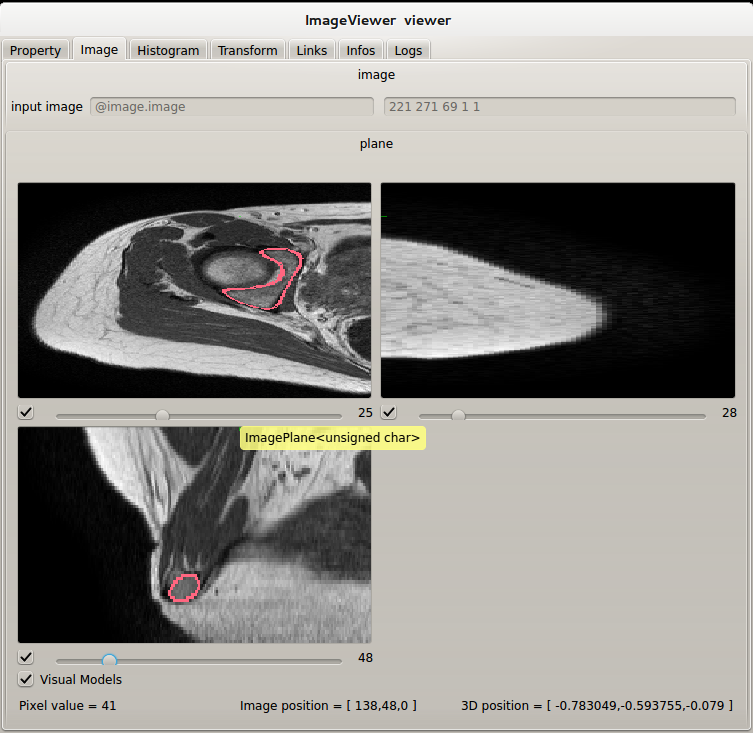

PluginImage multipleFilters Example
This scene shows an example of the image plugin. It demonstrates how to use multiple filters on one image. In this example,
a blur filter is first applied to the 3D image, after which a resize filter is applied and finally a structure tensors filter is used.
To run it, you need to load image Plugin using the Plugin Manager of the GUI, or the command line.
